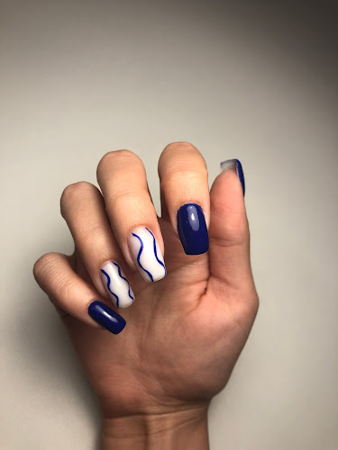
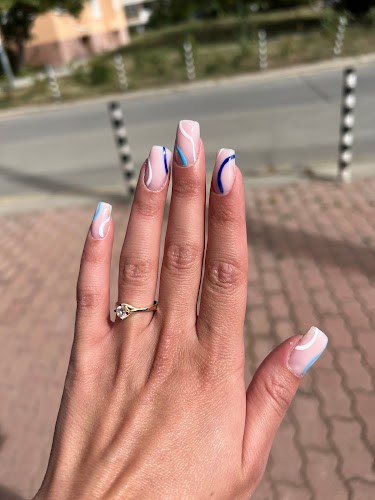
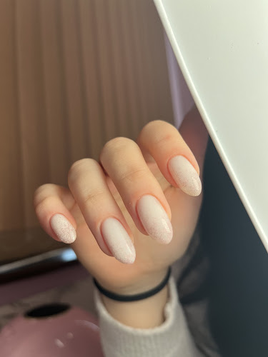
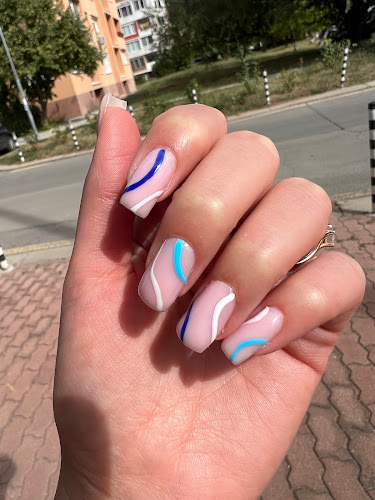
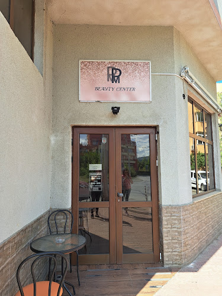

Прецизност
Отзивите подчертават старателна работа, внимание към всеки нокът и красив финален резултат.
Маникюр · педикюр · грижа
PM BEAUTY CENTER е малък салон в Дружба 2, където клиентките хвалят Петя за прецизност, отношение и чиста работа.

Защо тук
Отзивите подчертават старателна работа, внимание към всеки нокът и красив финален резултат.
Клиентките често отбелязват чистотата, дезинфекцията и поддържаното работно място.
Място с кафе, спокойна атмосфера и усещане за индивидуална грижа, не претупана услуга.
Услуги
Подготовка, оформяне и завършек с внимание към линията, формата и издръжливостта.
Поддръжка и грижа за ходилата и ноктите в чиста, спокойна среда.
Подходящо за по-силен, равен и поддържан вид на естествения нокът.
Избор на нюанс и дизайн според стила, сезона и ежедневието.
Маникюри



Клиентски думи
„Страхотен професионалист! По-доволна не съм била от към качество, отношение и обгрижване.“
Karina Antova · ReviewEuro/Titul
„Останах много доволна. Момичето се старае, работи добре. Внимателна е, оглежда всеки нокът.“
Ваня Врачанска · Titul
„Изключително доволна съм! Изключителен професионализъм, комбиниран с човешко отношение, търпение, грация и стил.“
Antoniya Koseva · Titul
„Прецизна, внимателна и вглеждаща се в детайла. Изключително чиста работа и хигиена на работното място.“
Kalina Markova · Titul
Работно време
Google Maps
PM BEAUTY CENTER се намира на ул. „Обиколна“ 8, ж.к. Дружба 2, 1582 София. За час: 087 796 0022.

Навигация в Google Maps